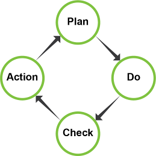
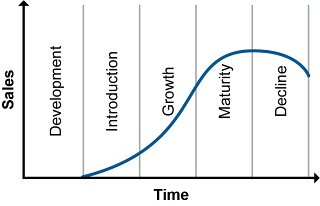
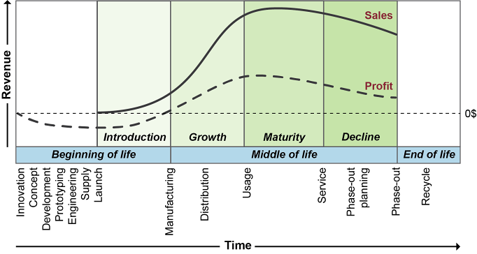
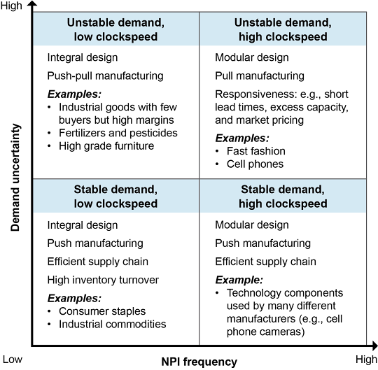

Demand generation translates latent demand ideas into actual sales. Critical for new product introductions — most new products fail. Key marketing responsibilities:
Customer-focused marketing has shifted focus from product-out to customer-in. Key tools:
Exhibit 1-28 shows 6 stages of the product life cycle (including pre-launch development):
PLM manages new product introductions, existing product life cycles, and end-of-life activities (phase-out, reverse logistics). PLM software provides tools for the full lifecycle.


NPI schedule phases:
New products range from innovative (high uncertainty, short life cycles) to functional (stable demand, long life cycles). Design and supply chain strategy must align with product type.

4 categories (clockspeed = rate of product change):
Click card to flip · Use arrows or shuffle to practise